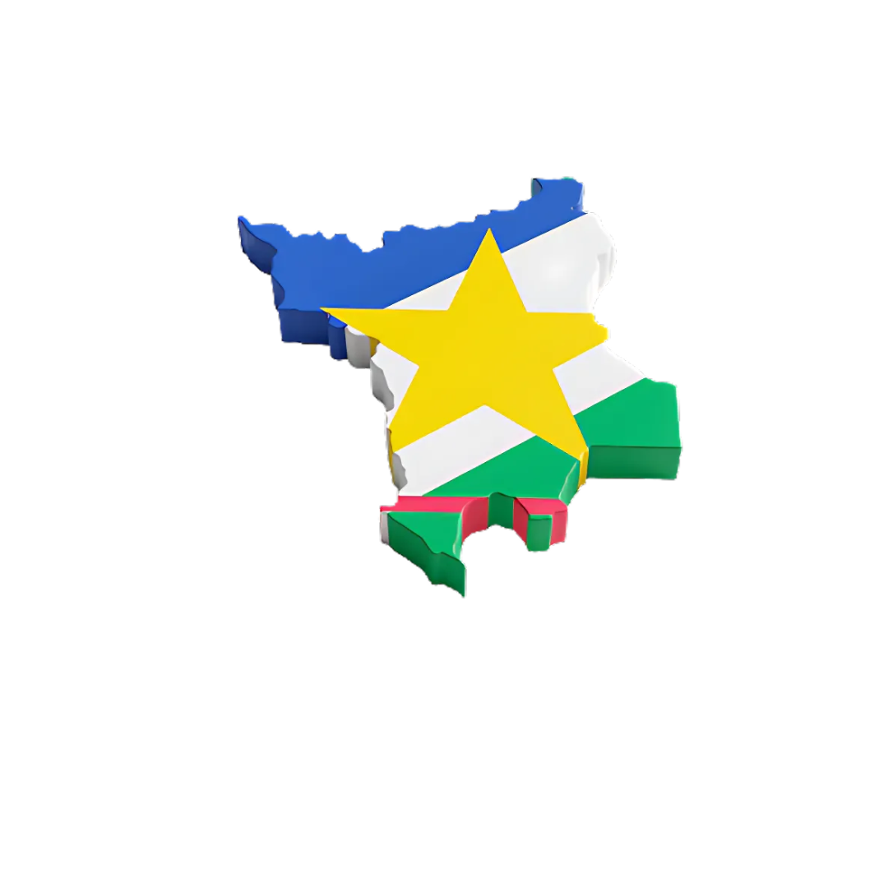

Meios de produção: Agricultura, Pecuária e Piscicultura.
Produtos principais: Milho, mandioca, banana, cana-de-açúcar e arroz.
Destaque: Amajari é um dos maiores produtores de tambaqui do país.
Produção de Tambaqui: 15 mil toneladas (2020), sendo 11 mil exportadas para o Amazonas.
Renda: Piscicultura movimentou mais de R$ 9 milhões em 2020.
Top 3 clientes: Amazonas, mercado interno de Roraima, outros estados do Norte.
Principal cidade: Amajari.

Meios de produção: Agricultura (soja, milho e arroz) e Pecuária.
Produtos principais: Soja, milho e arroz.
Produção de Soja: 360 mil toneladas em 2023, com previsão de 370,2 mil toneladas em 2024.
Renda: US$ 368,7 milhões em exportações (2023), sendo US$ 190,2 milhões de soja e derivados.
Top 3 clientes: Itália, Cuba, Venezuela.
Principal cidade: Bonfim.

Meios de produção: Agricultura (soja, milho e arroz) e Pecuária.
Produtos principais: Grãos e gado.
Área de Soja: 115.134 hectares em 2024 (76% da área de grãos).
Renda: Impacto significativo na economia, empregos e renda.
Top 3 clientes: Venezuela, Guiana, Brasil (mercado interno).
Principal cidade: Cantá.

Meios de produção: Agricultura (soja e milho) e Pecuária.
Produtos principais: Soja, milho e gado.
Área de Soja: 143.280 hectares em 2025 (aumento de 24,4%).
Renda: Expansão da soja impulsiona a economia e exportações.
Top 3 clientes: Venezuela, China, Turquia.
Principal cidade: Alto Alegre.